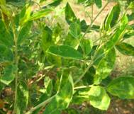

The affected plants are stunted due to shortening of internodes.

The auxiliary buds are stimulated to grow and the branches are crowded at the top giving bushy appearance.
Mainly three types of symptoms are associated viz. severe mosaic in leaflets with complete sterility , mild mosaic with partial sterility and ring spots characterized by a green island surrounded by a chlorotic halo.
MANAGEMENT
Rouging out infected plants up to 40 days after sowing
Spraying with Fenazaquin @ 1 ml/ litre soon after appearance of the disease and if necessary repeat after 15 days.